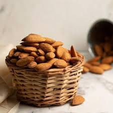
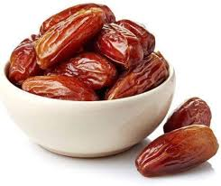
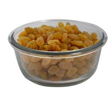

Dryfruits
Badam
 Read more information
A badam is an elongated, edible dryfruit botanically a berry produced by several kinds of large herbaceous flowering plants in the genus Musa.
Khajur
 Read more information
khajur, (Malus domestica), domesticated tree and fruit of the rose family (Rosaceae), one of the most widely cultivated tree fruits.
Kishmish
 Read more information
A grapes is a fruit, botanically a berry, of the deciduous woody vines of the flowering plant genus Vitis.